MSTP retreat, June 2013, Jonas Almeida, Div Informatics, Dept Pathology, UAB, March 2013 +
What is BigData
Why it makes sense to analyse data before you obtain it
Web as a global data space
Web as a global analytical space
Where at UAB can you learn more
Would you get reccognition for a Data skill
Colbert Report on The Creative Destruction of Medicine • CancerLinQ • Open Data • 23andme • imagejs • gps.wustl.edu
BigData - a new experimental frontier in the life sciences.
" ...the broad area encompassed by data science (i.e., bioinformatics, computational biology, biomedical informatics, biostatistics, information science, quantitative biology, etc.)"*
* NIH Data Science Initiative
Informatics Division
Created January 2011, planned for ~4-5 faculty, full strength June 2013
Presentation
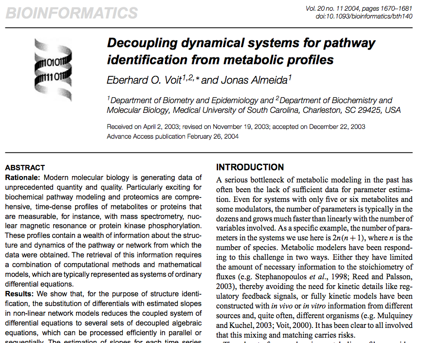
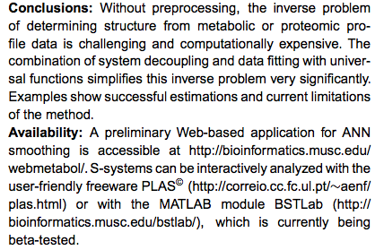
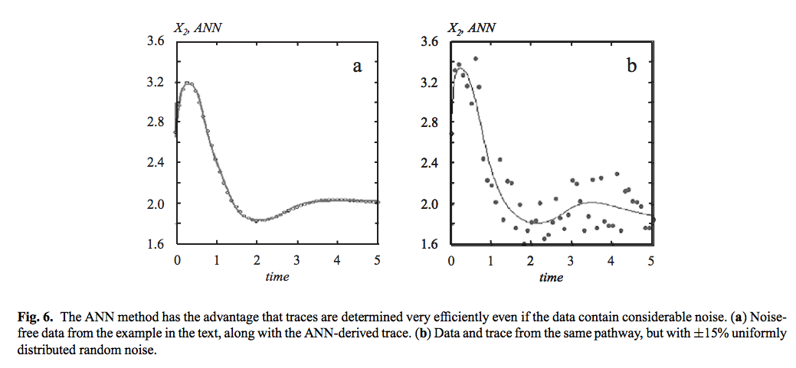
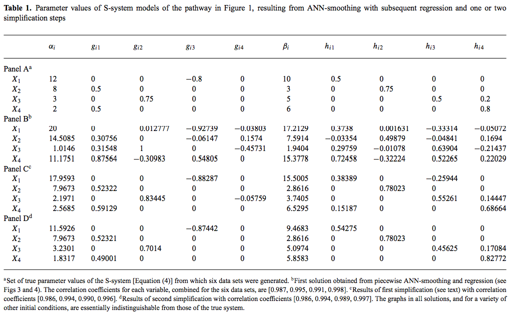
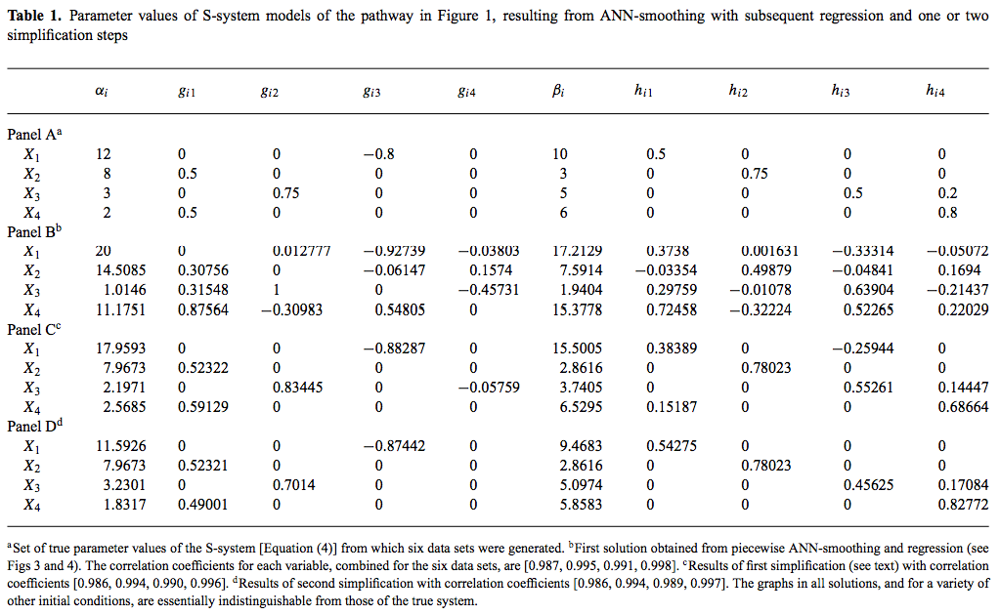
Big Data: when size, assynchrony, or heterogeneity exceed the ability of the local resources to handle it.
YouTube
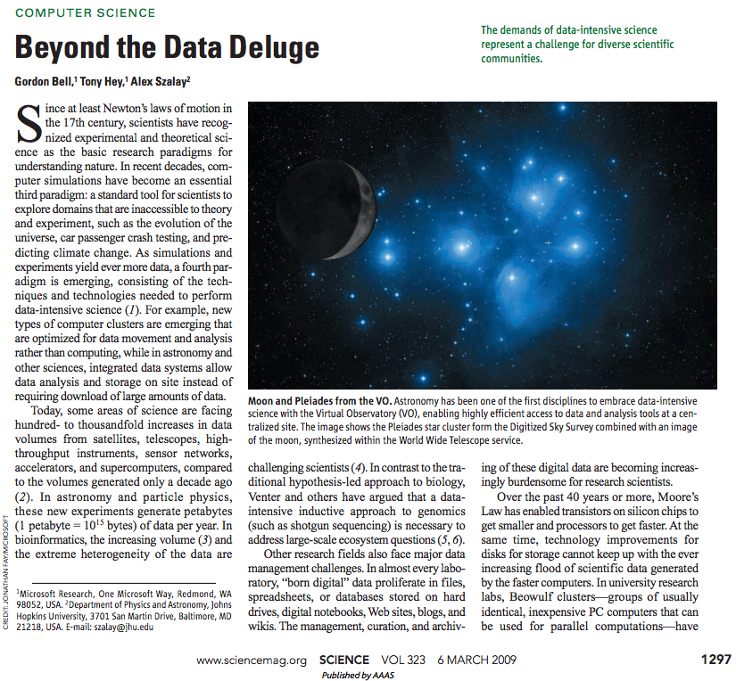
A Self-Updating Roadmap of The Cancer Genome Atlas
Robbins DE, A Gruneberg1, HF Deus3, MM Tanik, JS Almeida (2013) Bioinformatics (in press)
Robbins DE, A Gruneberg1, HF Deus3, MM Tanik, JS Almeida (2013) Bioinformatics (in press)
Almeida JS, A Grüneberg, W Maass, S Vinga (2012) Fractal MapReduce decomposition of sequence alignment. Algorithms for Molecular Biology 7:12 [PMID:22551205].
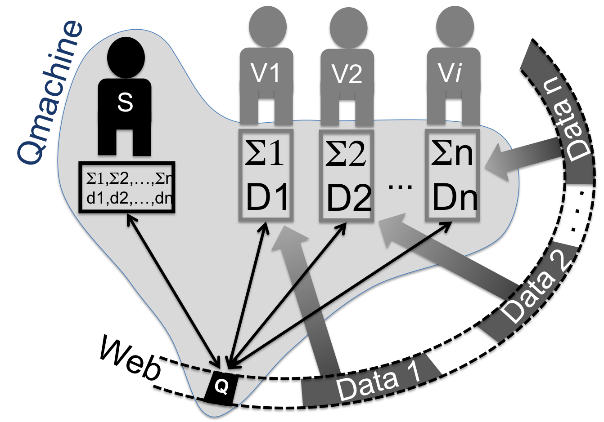
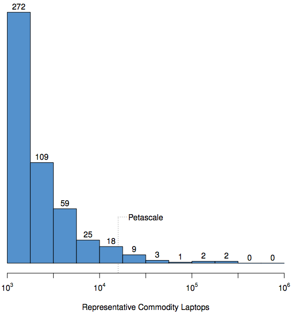
Foating-point performance distribution of the Top500 fastest supercomputers as of Nov 2012, given in terms of representative commodity laptops.
"Even if we were given all the National Science Foundation supercomputing centers combined for a couple of months, that is still fewer resources than we have now, said Dr. Vijay Pande, the Stanford University biologist who directs Folding@home."
NYT 2002 Apr 23 "Supercomputing '@Home' Is Paying Off"
NYT 2002 Apr 23 "Supercomputing '@Home' Is Paying Off"
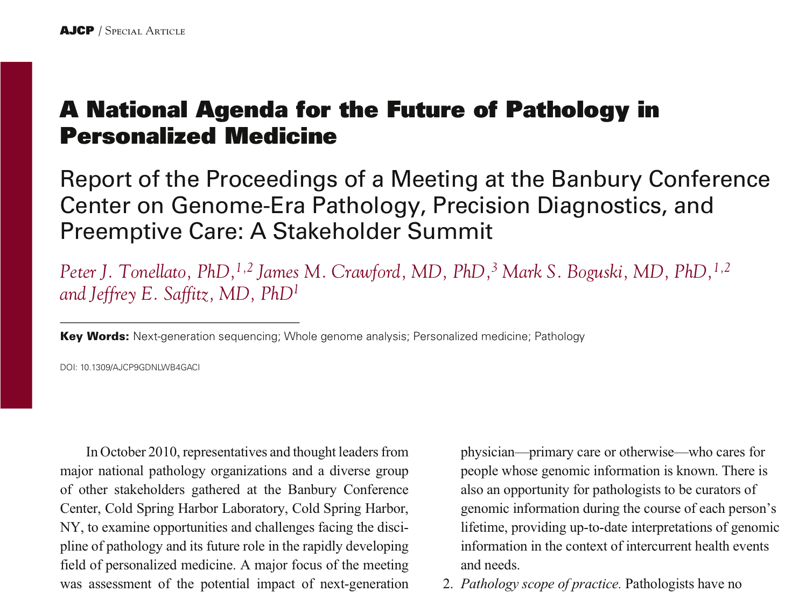
March 19, 2013
March 19, 2013
March 19, 2013
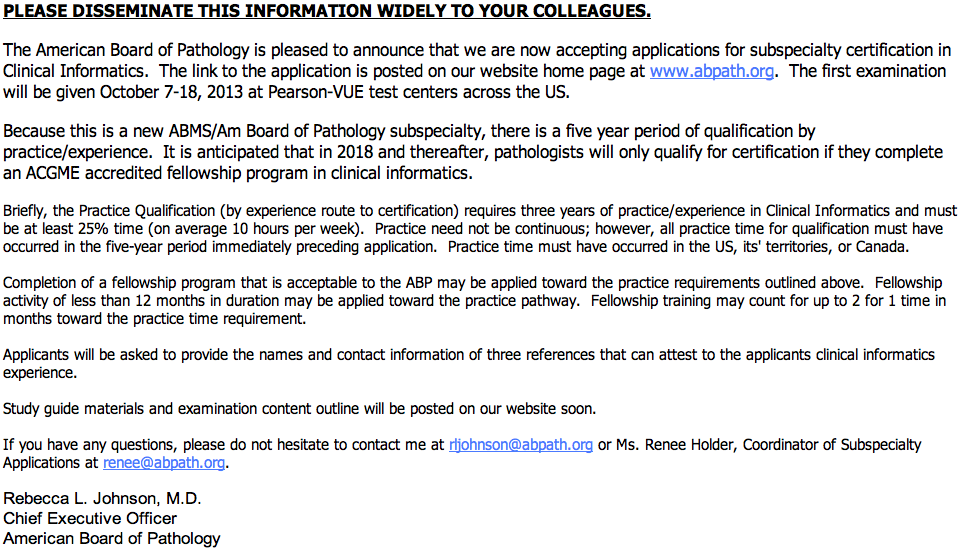
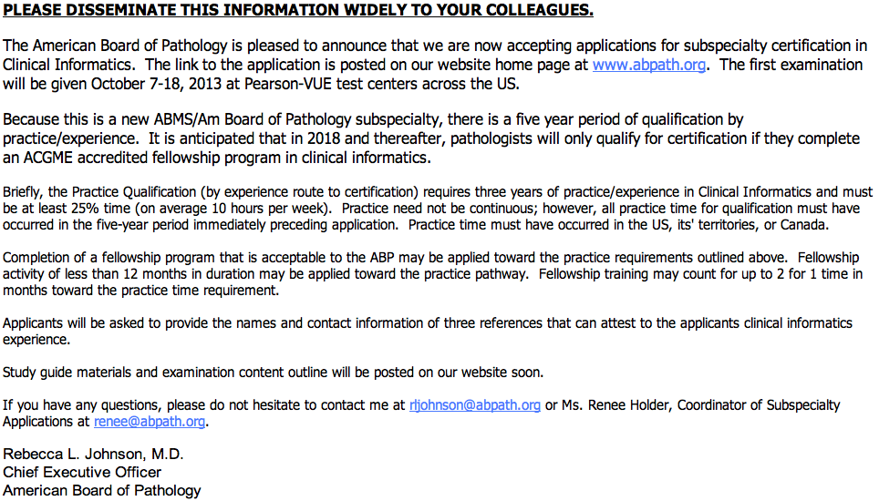